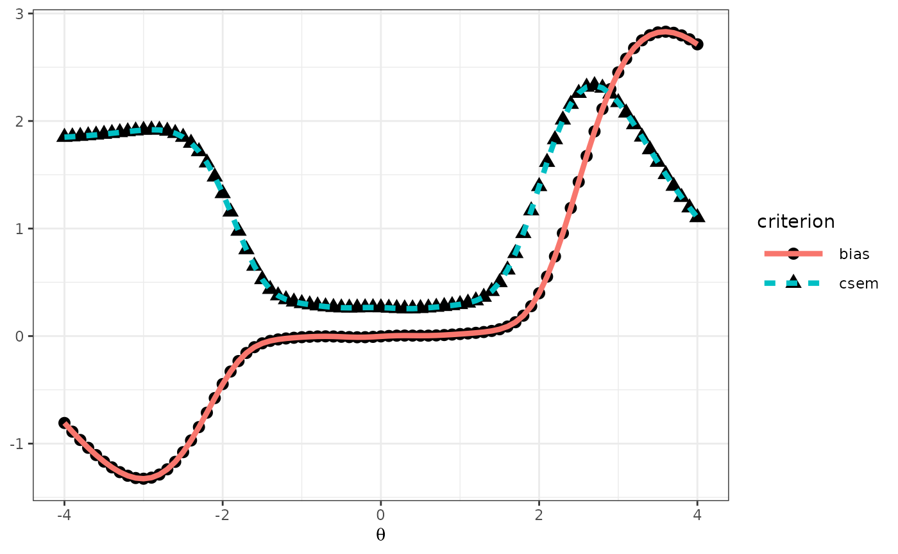

This function evaluates the measurement precision and bias in Multistage-Adaptive Test (MST) panels using a recursion-based evaluation method introduced by Lim et al. (2021). This function computes conditional biases and standard errors of measurement (CSEMs) across a range of IRT ability levels, facilitating efficient and accurate MST panel assessments without extensive simulations.
Arguments
- x
A data frame containing the metadata for the item bank, which includes important information for each item such as the number of score categories and the IRT model applied. This metadata is essential for evaluating the MST panel, with items selected based on the specifications in the
moduleargument. To construct this item metadata efficiently, theshape_df()function is recommended. Further details on utilizing item bank metadata along withmodulefor MST panel evaluation are provided below.- D
A scaling constant used in IRT models to make the logistic function closely approximate the normal ogive function. A value of 1.7 is commonly used for this purpose. Default is 1.
- route_map
A binary square matrix that defines the MST structure, illustrating transitions between modules and stages. This concept and structure are inspired by the
transMatrixargument in therandomMST()function from the mstR package (Magis et al., 2017), which provides a framework for representing MST pathways. For comprehensive understanding and examples of constructingroute_map, refer to the mstR package (Magis et al., 2017) documentation. Also see below for details.- module
A binary matrix that maps items from the item bank specified in
xto modules within the MST framework. This parameter's structure is analogous to themodulesargument in therandomMST()function of the mstR package, enabling precise item-to-module assignments for MST configurations. For detailed instructions on creating and utilizing themodulematrix effectively, consult the documentation of the mstR package (Magis et al., 2017). Also see below for details.- cut_score
A list defining cut scores for routing test takers through MST stages. Each list element is a vector of cut scores for advancing participants to subsequent stage modules. In a 1-3-3 MST configuration, for example,
cut_scoremight be defined ascut_score = list(c(-0.5, 0.5), c(-0.6, 0.6)), wherec(-0.5, 0.5)are thresholds for routing from the first to the second stage, andc(-0.6, 0.6)for routing from the second to the third stage. This setup facilitates tailored test progression based on performance. Further examples and explanations are available below.- theta
A vector of ability levels (theta) at which the MST panel's performance is assessed. This allows for the evaluation of measurement precision and bias across a continuum of ability levels. The default range is
theta = seq(-5, 5, 0.1).- intpol
A logical value to enable linear interpolation in the inverse test characteristic curve (TCC) scoring, facilitating ability estimate approximation for observed sum scores not directly obtainable from the TCC, such as those below the sum of item guessing parameters. Default is TRUE, applying interpolation to bridge gaps in the TCC. Refer to
est_score()for more details and consult Lim et al. (2021) for insights into the interpolation technique within inverse TCC scoring.- range.tcc
A vector to define the range of ability estimates for inverse TCC scoring, expressed as the two numeric values for lower and upper bounds. Default is to c(-7, 7).
- tol
A numeric value of the convergent tolerance for the inverse TCC scoring. For the inverse TCC scoring, the bisection method is used for optimization. Default is 1e-4.
Value
This function returns a list of seven internal objects. The four objects are:
- panel.info
A list of several sub-objects containing detailed information about the MST panel configuration, including:
- config
A nested list indicating the arrangement of modules across stages, showing which modules are included in each stage. For example, the first stage includes module 1, the second stage includes modules 2 to 4, and so forth.
- pathway
A matrix detailing all possible pathways through the MST panel. Each row represents a unique path a test taker might take, based on their performance and the cut scores defined.
- n.module
A named vector indicating the number of modules available at each stage.
- n.stage
A single numeric value representing the total number of stages in the MST panel.
- item.by.mod
A list where each entry represents a module in the MST panel, detailing the item metadata within that module. Each module's metadata includes item IDs, the number of categories, the IRT model used (model), and the item parameters (e.g., par.1, par.2, par.3).
- item.by.path
A list containing item metadata arranged according to the paths through the MST structure. This detailed breakdown allows for an analysis of item characteristics along specific MST paths. Each list entry corresponds to a testing stage and path, providing item metadata. This structure facilitates the examination of how items function within the context of each unique path through the MST.
- eq.theta
Estimated ability levels (\(\theta\)) corresponding to the observed scores, derived from the inverse TCC scoring method. This provides the estimated \(\theta\) values for each potential pathway through the MST stages. For each stage, \(\theta\) values are calculated for each path, indicating the range of ability levels across the test takers. For instance, in a three-stage MST, the
eq.thetalist may contain \(\theta\) estimates for multiple paths within each stage, reflecting the progression of ability estimates as participants move through the test. The example below illustrates the structure ofeq.thetaoutput for a 1-3-3 MST panel with varying paths:- stage.1
path.1shows \(\theta\) estimates ranging from -7 to +7, demonstrating the initial spread of abilities.- stage.2
Multiple paths (
path.1,path.2, ...) each with their own \(\theta\) estimates, indicating divergence in ability levels based on test performance.- stage.3
Further refinement of \(\theta\) estimates across paths, illustrating the final estimation of abilities after the last stage.
- cdist.by.mod
A list where each entry contains the conditional distributions of the observed scores for each module given the ability levels.
- jdist.by.path
Joint distributions of observed scores for different paths at each stage in a MST panel. The example below outlines the organization of
jdist.by.pathdata in a hypothetical 1-3-3 MST panel:- stage.1
Represents the distribution at the initial stage, indicating the broad spread of test-taker abilities at the outset.
- stage.2
Represents the conditional joint distributions of the observed scores as test-takers move through different paths at the stage 2, based on their performance in earlier stages.
- stage.3
Represents a further refinement of joint distribution of observed scores as test-takers move through different paths at the final stage 3, based on their performance in earlier stages.
- eval.tb
A table summarizing the measurement precision of the MST panel. It contains the true ability levels (
theta) with the mean ability estimates (mu), variance (sigma2), bias, and conditional standard error of measurement (CSEM) given the true ability levels. This table highlights the MST panel's accuracy and precision across different ability levels, providing insights into its effectiveness in estimating test-taker abilities.
Details
The reval_mst() function evaluates an MST panel by
implementing a recursion-based method to assess measurement precision
across IRT ability levels. This approach, detailed in Lim et al. (2021),
enables the computation of conditional biases and CSEMs efficiently,
bypassing the need for extensive simulations traditionally required for MST
evaluation.
The module argument, used in conjunction with the item bank metadata x,
systematically organizes items into modules for MST panel evaluation. Each
row of x corresponds to an item, detailing its characteristics like score
categories and IRT model. The module matrix, structured with the same
number of rows as x and columns representing modules, indicates item
assignments with 1s. This precise mapping enables the reval_mst()
function to evaluate the MST panel's performance by analyzing how items
within each module contribute to measurement precision and bias, reflecting
the tailored progression logic inherent in MST designs.
The route_map argument is essential for defining the MST's structure by
indicating possible transitions between modules. Similar to the
transMatrix() in the mstR package (Magis et al., 2017), route_map
is a binary matrix that outlines which module transitions are possible
within an MST design. Each "1" in the matrix represents a feasible
transition from one module (row) to another (column), effectively mapping
the flow of test takers through the MST based on their performance. For
instance, a "1" at the intersection of row i and column j indicates the
possibility for test takers to progress from the module corresponding to
row i directly to the module denoted by column j. This structure allows
reval_mst() to simulate and evaluate the dynamic routing of test
takers through various stages and modules of the MST panel.
To further detail the cut_score argument with an illustration: In a 1-3-3
MST configuration, the list cut_score = list(c(-0.5, 0.5), c(-0.6, 0.6))
operates as a decision guide at each stage. Initially, all test takers
start in the first module. Upon completion, their scores determine their
next stage module: scores below -0.5 route to the first module of the next
stage, between -0.5 and 0.5 to the second, and above 0.5 to the third. This
pattern allows for dynamic adaptation, tailoring the test path to
individual performance levels.
References
Magis, D., Yan, D., & Von Davier, A. A. (2017). Computerized adaptive and multistage testing with R: Using packages catR and mstR. Springer.
Lim, H., Davey, T., & Wells, C. S. (2021). A recursion-based analytical approach to evaluate the performance of MST. Journal of Educational Measurement, 58(2), 154-178.
Author
Hwanggyu Lim hglim83@gmail.com
Examples
# \donttest{
## ------------------------------------------------------------------------------
# Evaluation of a 1-3-3 MST panel using simMST data.
# This simulation dataset was utilized in Lim et al.'s (2021) simulation study.
# Details:
# (a) Panel configuration: 1-3-3 MST panel
# (b) Test length: 24 items (each module contains 8 items across all stages)
# (c) IRT model: 3-parameter logistic model (3PLM)
## ------------------------------------------------------------------------------
# Load the necessary library
library(dplyr)
library(tidyr)
library(ggplot2)
# Import item bank metadata
x <- simMST$item_bank
# Import module information
module <- simMST$module
# Import routing map
route_map <- simMST$route_map
# Import cut scores for routing to subsequent modules
cut_score <- simMST$cut_score
# Import ability levels (theta) for evaluating measurement precision
theta <- simMST$theta
# Evaluate MST panel using the reval_mst() function
eval <-
reval_mst(x,
D = 1.702, route_map = route_map, module = module,
cut_score = cut_score, theta = theta, range.tcc = c(-5, 5)
)
# Review evaluation results
# The evaluation result table below includes conditional biases and
# standard errors of measurement (CSEMs) across ability levels
print(eval$eval.tb)
#> theta mu sigma2 bias csem
#> 1 -4.0 -3.315151711 0.81243639 0.6848482889 0.9013525
#> 2 -3.9 -3.308122145 0.81249024 0.5918778555 0.9013824
#> 3 -3.8 -3.299466478 0.81250415 0.5005335222 0.9013901
#> 4 -3.7 -3.288817058 0.81244163 0.4111829417 0.9013554
#> 5 -3.6 -3.275730371 0.81224431 0.3242696286 0.9012460
#> 6 -3.5 -3.259675887 0.81182079 0.2403241126 0.9010110
#> 7 -3.4 -3.240025903 0.81103090 0.1599740975 0.9005725
#> 8 -3.3 -3.216048229 0.80966409 0.0839517714 0.8998134
#> 9 -3.2 -3.186904502 0.80741090 0.0130954981 0.8985605
#> 10 -3.1 -3.151657917 0.80382781 -0.0516579167 0.8965644
#> 11 -3.0 -3.109295249 0.79829771 -0.1092952491 0.8934751
#> 12 -2.9 -3.058768592 0.78999264 -0.1587685917 0.8888153
#> 13 -2.8 -2.999061853 0.77785149 -0.1990618528 0.8819589
#> 14 -2.7 -2.929284858 0.76059315 -0.2292848582 0.8721199
#> 15 -2.6 -2.848793209 0.73679246 -0.2487932093 0.8583662
#> 16 -2.5 -2.757324677 0.70504694 -0.2573246765 0.8396707
#> 17 -2.4 -2.655133580 0.66425060 -0.2551335795 0.8150157
#> 18 -2.3 -2.543095304 0.61395916 -0.2430953040 0.7835555
#> 19 -2.2 -2.422746810 0.55477998 -0.2227468100 0.7448355
#> 20 -2.1 -2.296229108 0.48866012 -0.1962291085 0.6990423
#> 21 -2.0 -2.166108358 0.41890796 -0.1661083585 0.6472310
#> 22 -1.9 -2.035077758 0.34981064 -0.1350777582 0.5914479
#> 23 -1.8 -1.905584122 0.28583952 -0.1055841216 0.5346396
#> 24 -1.7 -1.779470568 0.23064795 -0.0794705684 0.4802582
#> 25 -1.6 -1.657751636 0.18624743 -0.0577516359 0.4315639
#> 26 -1.5 -1.540606085 0.15273247 -0.0406060853 0.3908100
#> 27 -1.4 -1.427583578 0.12865527 -0.0275835775 0.3586855
#> 28 -1.3 -1.317925176 0.11180081 -0.0179251758 0.3343663
#> 29 -1.2 -1.210862682 0.09995113 -0.0108626816 0.3161505
#> 30 -1.1 -1.105805063 0.09135406 -0.0058050633 0.3022483
#> 31 -1.0 -1.002391488 0.08486148 -0.0023914881 0.2913099
#> 32 -0.9 -0.900435000 0.07985646 -0.0004349999 0.2825889
#> 33 -0.8 -0.799797656 0.07608715 0.0002023439 0.2758390
#> 34 -0.7 -0.700256814 0.07346730 -0.0002568144 0.2710485
#> 35 -0.6 -0.601437729 0.07189144 -0.0014377292 0.2681258
#> 36 -0.5 -0.502856126 0.07113257 -0.0028561262 0.2667069
#> 37 -0.4 -0.404036888 0.07086214 -0.0040368885 0.2661994
#> 38 -0.3 -0.304627592 0.07074799 -0.0046275922 0.2659849
#> 39 -0.2 -0.204456986 0.07053962 -0.0044569862 0.2655930
#> 40 -0.1 -0.103545413 0.07009517 -0.0035454132 0.2647549
#> 41 0.0 -0.002086355 0.06937647 -0.0020863553 0.2633941
#> 42 0.1 0.099605094 0.06845181 -0.0003949059 0.2616330
#> 43 0.2 0.201186926 0.06750554 0.0011869262 0.2598183
#> 44 0.3 0.302412683 0.06682583 0.0024126833 0.2585069
#> 45 0.4 0.403238687 0.06675136 0.0032386872 0.2583629
#> 46 0.5 0.503865394 0.06758217 0.0038653939 0.2599657
#> 47 0.6 0.604676874 0.06948120 0.0046768744 0.2635929
#> 48 0.7 0.706084755 0.07241436 0.0060847548 0.2690992
#> 49 0.8 0.808347795 0.07618349 0.0083477949 0.2760136
#> 50 0.9 0.911476680 0.08057140 0.0114766796 0.2838510
#> 51 1.0 1.015292639 0.08556051 0.0152926392 0.2925073
#> 52 1.1 1.119613635 0.09157890 0.0196136351 0.3026201
#> 53 1.2 1.224482001 0.09979670 0.0244820009 0.3159062
#> 54 1.3 1.330368035 0.11256418 0.0303680346 0.3355059
#> 55 1.4 1.438341074 0.13403659 0.0383410744 0.3661101
#> 56 1.5 1.550220555 0.17081840 0.0502205547 0.4133018
#> 57 1.6 1.668675144 0.23213521 0.0686751437 0.4818041
#> 58 1.7 1.797161158 0.32880161 0.0971611579 0.5734122
#> 59 1.8 1.939556253 0.47041363 0.1395562528 0.6858671
#> 60 1.9 2.099420004 0.66100489 0.1994200038 0.8130221
#> 61 2.0 2.278999976 0.89466646 0.2789999764 0.9458681
#> 62 2.1 2.478299894 1.15350998 0.3782998942 1.0740158
#> 63 2.2 2.694589735 1.40985468 0.4945897346 1.1873730
#> 64 2.3 2.922593610 1.63250973 0.6225936097 1.2776970
#> 65 2.4 3.155313241 1.79472536 0.7553132408 1.3396736
#> 66 2.5 3.385198212 1.88048226 0.8851982121 1.3713068
#> 67 2.6 3.605288505 1.88687626 1.0052885051 1.3736361
#> 68 2.7 3.810040895 1.82247511 1.1100408947 1.3499908
#> 69 2.8 3.995722980 1.70319022 1.1957229797 1.3050633
#> 70 2.9 4.160415693 1.54765003 1.2604156927 1.2440458
#> 71 3.0 4.303751347 1.37351113 1.3037513472 1.1719689
#> 72 3.1 4.426528159 1.19527061 1.3265281586 1.0932843
#> 73 3.2 4.530311684 1.02346632 1.3303116839 1.0116651
#> 74 3.3 4.617089274 0.86483582 1.3170892740 0.9299655
#> 75 3.4 4.689004875 0.72297630 1.2890048747 0.8502801
#> 76 3.5 4.748175629 0.59915902 1.2481756286 0.7740536
#> 77 3.6 4.796578286 0.49309273 1.1965782860 0.7022056
#> 78 3.7 4.835988848 0.40354394 1.1359888485 0.6352511
#> 79 3.8 4.867959380 0.32879397 1.0679593803 0.5734056
#> 80 3.9 4.893818703 0.26694965 0.9938187025 0.5166717
#> 81 4.0 4.914687017 0.21613853 0.9146870173 0.4649070
# Generate plots for biases and CSEMs
p_eval <-
eval$eval.tb %>%
dplyr::select(theta, bias, csem) %>%
tidyr::pivot_longer(
cols = c(bias, csem),
names_to = "criterion", values_to = "value"
) %>%
ggplot2::ggplot(mapping = ggplot2::aes(x = theta, y = value)) +
ggplot2::geom_point(mapping = ggplot2::aes(shape = criterion), size = 3) +
ggplot2::geom_line(
mapping = ggplot2::aes(
color = criterion,
linetype = criterion
),
linewidth = 1.5
) +
ggplot2::labs(x = expression(theta), y = NULL) +
ggplot2::theme_classic() +
ggplot2::theme_bw() +
ggplot2::theme(legend.key.width = unit(1.5, "cm"))
print(p_eval)

# }